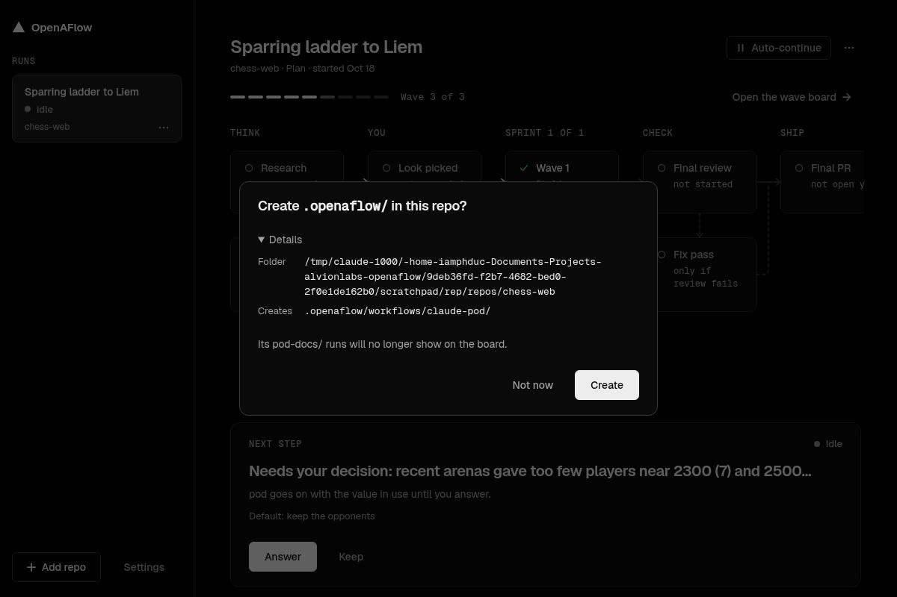
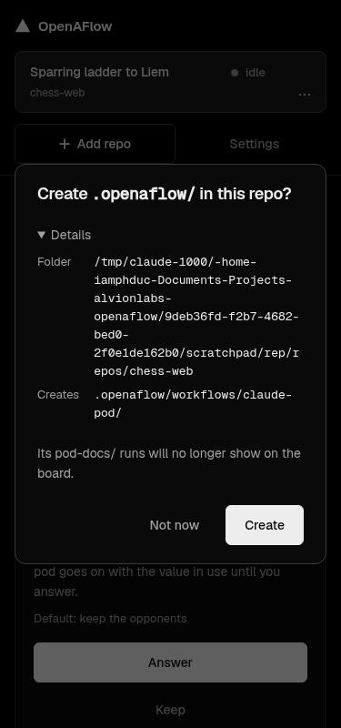
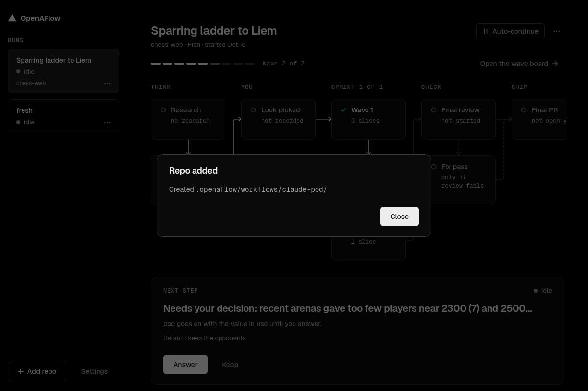
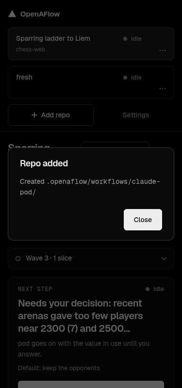
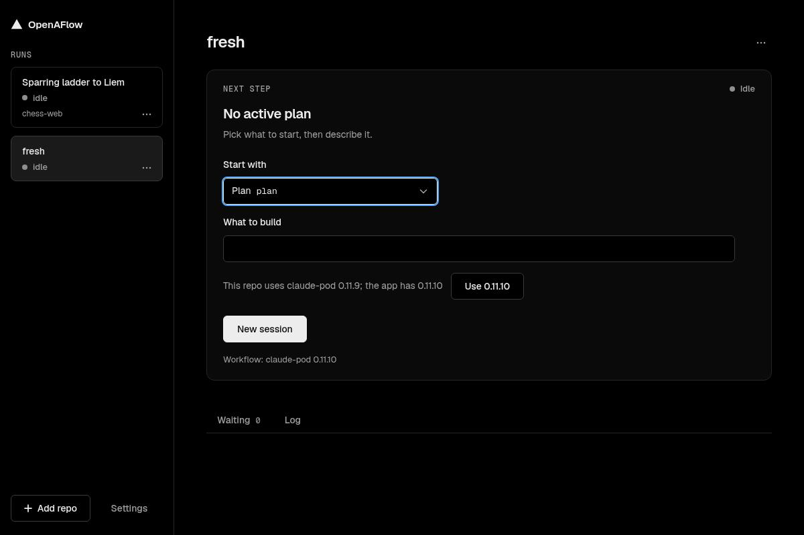
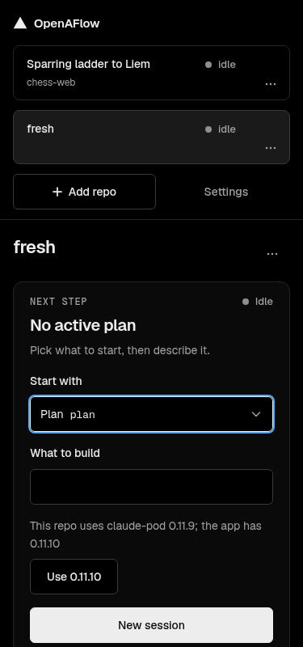
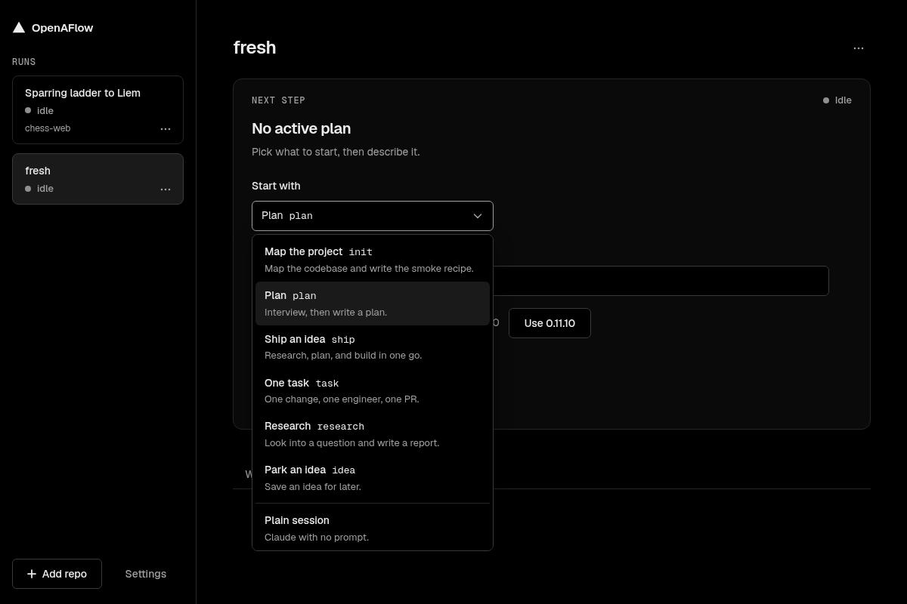
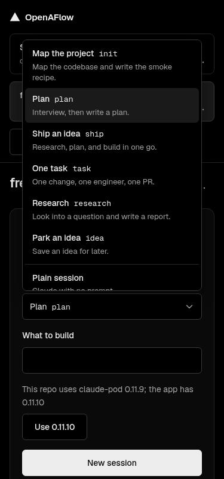
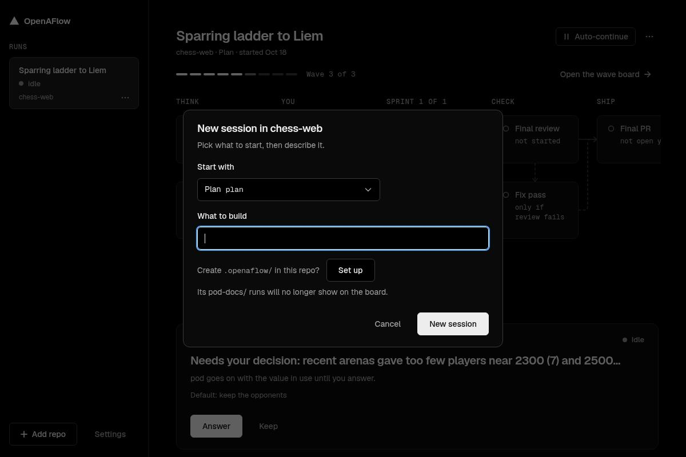
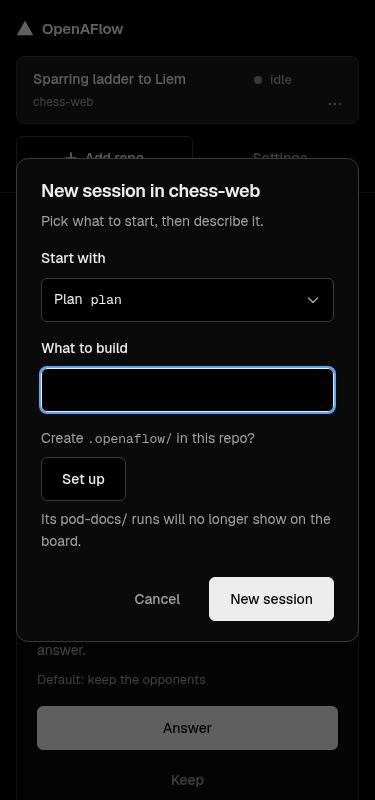

Default workflow
At a glance
Goal: OpenAFlow ships its own default workflow, claude-pod at a pinned release, and each repo keeps its pin and the workflow's state in one committed .openaflow/ folder.
Shipped:
- A build that pins claude-pod by tag and commit, renames
pod-docsto.openaflow/workflows/claude-pod/state, and bundles it in the app. - Add repo creates
.openaflow/workflows/claude-pod/(at once, or after a confirm for a repo withpod-docs/). - Hosted sessions in a set-up repo load the bundled workflow; the board and the queue read and write its state folder.
- New session shows bare skill names, the workflow version, a mismatch notice with Use, and a Set up offer.
- The Terminal tab names
disableSideloadFlagswhen an organization blocks the plugin flags.
Lines and files count all of pod-docs/ too. Wall time is estimated: about 20 h from first to last commit, minus a 15 h idle gap.
PRs: four wave PRs (#162–#165), the review fix #167, and the final #166. Agent context is the Sprint summary's figure, summed over the 11 engineer hand-backs (each final context size, not tokens billed). CI on #166 passes on all 4 jobs, Windows included.
Look here first
packages/server/src/setup-routes.ts(the largest new file, 269 lines): the only code that writes into a user's repo. It builds.openaflow.tmp-*, then renames. A small race on Linux can lose an empty.openaflowmade in the gap.packages/server/src/session-command.ts,claude-runner.ts, andauto-continue.ts: they add the second--plugin-dir. The review found Continue skipped it (finding 1), and no realclaudehas ever run with two flags.packages/workflow/src/fetch.tsandtransform.ts: the build fetches third-party plugin text and rewrites it. Check the leftoverpod-docsrule and the rule that refuses links and non-UTF-8 rewrites.packages/model/src/run-model.tsandpackages/server/src/repo-files.ts: once a repo has.openaflow/, the board stops reading itspod-docs/, so its history disappears.packages/web/src/screens/runs/add-repo-flow.ts: after a human decision, Add repo now writes.openaflow/with no question for a repo withoutpod-docs/.
Key features
You add a repo, and OpenAFlow's own claude-pod runs in it from a committed pin, with no claude-pod install.
| Feature | What changed | Shown by |
|---|---|---|
| Default workflow build | claude-pod v0.11.10 pinned by tag and commit, renamed, bundled | result: grep -r pod-docs on the output finds nothing |
bump-workflow | pnpm bump-workflow <tag> rewrites only the lock | result: an unknown tag exits 1 and keeps the lock |
| Repo setup (Add repo) | creates .openaflow/workflows/claude-pod/, with a warning for pod-docs/ repos | screenshots 1 and 2 |
| New session | bare skill names, version line, mismatch with Use, Set up offer | screenshots 3, 4 and 5 |
| Bundled workflow in sessions | a set-up repo starts, resumes, and continues with both plugin folders | result: fake-claude tests (no real claude) |
| State reading | board and queue read every .openaflow/workflows/*/state/; pod-docs/ only with no .openaflow/ | result: API run with temp repos |
| Sideload stop line | stop bar names disableSideloadFlags and offers only Dismiss | result: unit tests, a static page |
Screenshots are the browser build with a stubbed desktop bridge, on temp folders and fixture copies. No session was started and no claude ran.
1. Add repo, a repo with pod-docs/


2. Add repo, a repo with neither folder


3. New session, set-up repo pinned to another version


4. Start with list, bare names


5. New session, repo with pod-docs/: the Set up offer


Proof
4 of 6 rows met, 2 checked by nobody. The real claude proof never ran, and two met rows rest on the engineers' own tests.
| Criterion or feature | Result | Checked by | How |
|---|---|---|---|
Real claude takes two --plugin-dir flags, the bundled pod replaces an installed one with its hooks, and Glob and Grep find files under .openaflow/ | not checked | nobody | the gated test real-workflow-start.test.ts never ran |
| Installed app on Windows: Add repo creates the folder | not checked | nobody | CI Windows jobs pass; the installed app never ran |
| Sideload stop line | met | engineer's tests | unit tests and a static page; never in the app |
| The 5 round 1 findings | met | engineer's tests | red then green tests in #167; CI passes; round 2 pending |
Clean build and package: no pod-docs, locked version, bump changes only the lock | met | reviewer | pnpm package, release check, bump on a scratch lock |
| Setup, Use, board reading, queue answers, New session | met | reviewer, this report | API run on temp repos; browser screenshots above |
Not checked by this report
- No
claudeand no desktop window ran here. The screenshots use a stubbed bridge, and the sideload line has no screenshot. - Round 2 of the review has no comment yet. Only the round 1 comment and the CI results were read.
Risks and undo
Every change writes into a user's repo or loads third-party code, and each undoes by deleting a folder or reverting a file. No migration, money, or auth change. The PR says Door: two-way.
| Risk | Undo |
|---|---|
Add repo writes .openaflow/ at once for a repo with no pod-docs/; the files show in git statuspackages/server/src/setup-routes.ts | Delete <repo>/.openaflow/. |
Setup on a pod-docs/ repo hides its runs from the boardpackages/model/src/run-model.ts | Delete <repo>/.openaflow/; the runs return. |
Use rewrites a committed workflow.json for the whole team, and can lower a newer pinpackages/server/src/setup-routes.ts | Revert the file in git. |
The queue writer appends answers to a state folder's handoff-queue.mdpackages/server/src/queue-writer.ts | Edit out the **Answer (human):** text. |
The build fetches claude-pod's tag over the network and bundles it; the check is the locked commitpackages/workflow/workflow.lock.json | pnpm bump-workflow <old tag>, then rebuild. |
The bundled pod silently replaces an installed claude-pod in set-up repos; real claude never proved itpackages/server/src/session-command.ts | Delete .openaflow/; the repo starts as before. |
How it fits together, as built
A build step makes the plugin, the app ships it, and the server's resolver hands it to session start and setup.
flowchart LR B["scripts/build.ts"] -- "reads tag and commit" --> L["workflow.lock.json"] B -- "writes plugin, fails on pod-docs" --> D["dist/claude-pod"] C["build-config.ts"] -- "extraResources" --> D S["server-launch.ts"] -- "workflowsRoot()" --> P["pty-host-launch.ts"] S -- "OPENAFLOW_WORKFLOWS_DIR" --> R["workflow-resolver.ts"] R -- "plugin.json, template state" --> D SR["session-routes.ts"] -- "plugin folder for --plugin-dir" --> R SU["setup-routes.ts"] -- "template, version" --> R BS["board-service.ts"] -- "files of each state folder" --> RF["repo-files.ts"] BS -- "runs per workflow" --> RM["run-model.ts"]
Differences from the plan
- The resolver is
packages/server/src/workflow-resolver.ts, not inpackages/desktop, as the sprint's slice S1 planned. The desktop only passes the folder. - Sessions load the bundled workflow only in a repo with
.openaflow/. A repo without it starts as before (human decision, 2026-11-24). The plan said every hosted session. - Continue (
claude-runner.ts) and auto-continue (auto-continue.ts) also pass both plugin folders. The plan named only session start. Review finding 1. - Setup makes the five empty template folders itself (
TEMPLATE_FOLDERSinsetup-routes.ts), because electron-builder drops every.gitkeep. Review finding 2. - The sideload block is read from Claude Code's managed settings file (
managed-settings.ts), not fromclaude's printed text, which can change. - The version line shows the app's bundled version, not the repo's pin, as the sprint's section 9 set it. The plan's example showed the pin.
Key decisions
Seven of eight decisions came from the human. The two newest change the plan: one narrows when setup asks, and one adds packaging to wave checks.
| Decision | By | Why | Instead of | Consequence |
|---|---|---|---|---|
Separate projects; one .openaflow/ with a folder per workflow | human | OpenAFlow works alone, and a second workflow can come later | a folder-name setting in claude-pod | dropping claude-pod removes one folder, not code |
The repo commits a pin, not a copy (workflow.json) | human | a team shares one version, and a bump is a one-line diff | a full copy in each repo (about 1.7 MB, stale on every bump) | a version mismatch shows a notice and Use, no block |
A repo without .openaflow/ starts sessions as today | human | blocking would cut every pod-docs/ repo off after an update | block New session and Resume until setup | such repos keep using the installed claude-pod |
Add repo sets up with no question unless the repo has pod-docs/ | human | adding a repo already says you want OpenAFlow there | always ask, or always create silently | a new repo gets .openaflow/ in git status at once |
| Package the app in the wave check of waves that touch the bundle | human | the missing .gitkeep bug was found three waves late | package every wave, or leave it to the plan review | about 3 more minutes on those waves |
Rename pod-docs at build time, with a leftover check | human | claude-pod stays unchanged, and a bump re-runs the transform | a fork of claude-pod | a new claude-pod layout can fail the build on purpose |
Pin by lock file and a git fetch checked against the commit | agent | claude-pod releases have no assets to hash | submodule, npm github: dependency, tarball hash | a moved tag fails the build; the first build needs git and the network |
Plugin keeps its pod prefix; the dropdown hides it | human | /plan and /init are Claude Code built-ins | unprefixed skills through --add-dir | the app sends /pod:plan …; the terminal still needs the prefix |
What's left
29 queue entries are open: 1 to fix next, 3 before hosting (two name the same real-claude proof), 5 value-in-use decisions to confirm, 20 someday.
Fix next
- Continue in the Reply panel shows the bare word
workflow missingin a set-up repo with no bundle (resume-flow.tsmaps no route words).
Before hosting
- Run
real-workflow-start.test.tswith a signed-in test config. It proves two--plugin-dirflags, the bundledpodreplacing an installed one, and Glob and Grep under.openaflow/. init's own scaffold copy in the installed app lacks the five empty folders. Only the workflow build can fix it.
Someday
- The Windows
installAndStartrelease check runs neithermissingPartsnorcheckNoPodDocs. - The browser build shows "This repo has no workflow yet" with no Set up button, because setup is in New session (desktop only).
- The sidebar chip still reads
update podfor a set-up repo with no readable docs. - Nothing in CI catches a new empty template folder after a bump.
- 5 value-in-use decisions (setup words, button focus, Repo added box, New session layout, newer docs) wait for your confirm, plus 16 smaller notes in
pod-docs/handoff-queue.md.